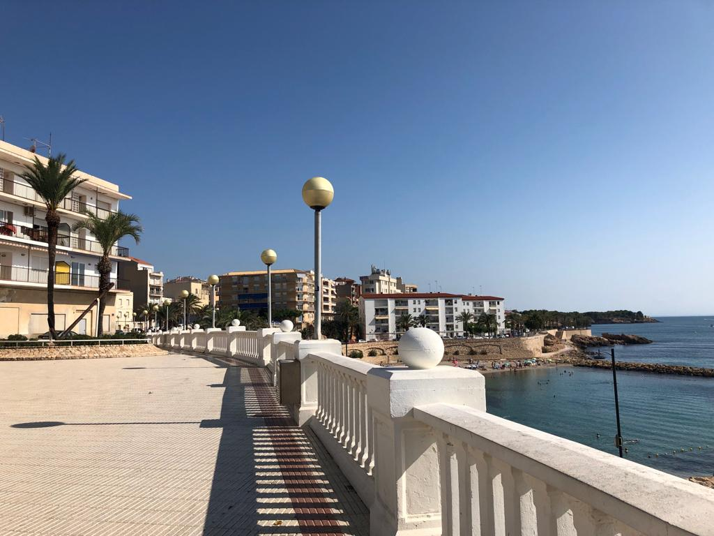

La Plaça Joan Miró forma parte del desarrollo urbano de L’Ametlla de Mar durante el siglo XX, cuando el pueblo empezó a crecer gracias a la pesca y al comercio marítimo. Con el aumento de población se crearon nuevas calles y plazas para organizar mejor el centro del municipio. La plaza fue dedicada al pintor catalán Joan Miró, uno de los artistas más importantes del arte moderno en Cataluña. Aunque Miró no era del pueblo, poner su nombre a la plaza fue una forma de reconocer la cultura catalana y el arte contemporáneo. Con el tiempo, la plaza se convirtió en un punto de encuentro para los vecinos, rodeado de viviendas y pequeños comercios, y forma parte de la vida cotidiana del centro de L’Ametlla de Mar.
